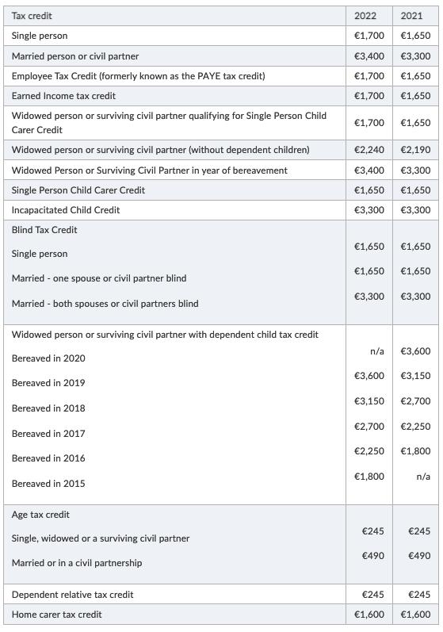

愛爾蘭報稅指南 - Ireland Tax Guide
剛到愛爾蘭 (Ireland) 工作的時候真的是被各種複雜的稅務搞得暈頭轉向，尤其是有許多的社會福利和稅務條件、海外收入的問題。就讓我們來看看如何節稅，以及有什麼要注意的地方吧。
稅務系統和名詞釋義
什麼是 PAYE (Pay As You Earn)
在愛爾蘭，只要每次你的薪資被支付，你的雇主通將會在薪資支付前扣抵下列項目並且支付給愛爾蘭稅務局 (Revenue)，這確保你的薪水正確的依照稅法扣繳：
- Income Tax (IT)：所得稅
- Pay Related Social Insurance (PRSI)：社會福利和養老金保險 (類似台灣的勞保)
- Universal Social Charge (USC)：由於在愛爾蘭很多情況下公眾醫療是不用付費的，這就是用於繳納健康保險，我不知道怎麼翻，總而言之是類似健保的東西
Income Tax (IT)：所得稅
在愛爾蘭所得稅採用累進稅率，最低稅率是 20%，超過一定級距的部分收入會以 40% 扣繳。
累進稅率會根據你在愛爾蘭的稅務身份 (是否有伴侶、扶養) 和收入狀況累進的條件不同：
具體可以參考：How your income tax is calculated。
Universal Social Charge (USC)
Universal Social Charge 也會根據收入級距有不同的扣繳比例 1
如果你到愛爾蘭工作是打算退休養老的，只要是滿 66 歲的長者可以不用繳納 PRSI 和 USC
Tax Credit 和 Tax Relief 的差別
我第一次看到這兩個名詞的時候有點搞不太懂這之間的差異，不過在找一些資料後終於明白這之間的區別，分別是：
- Tax credits：在所有繳納稅額計算後 (總所得收入已經計算完畢)，可減免繳稅的額度 (Tax credits reduce the amount of tax you pay)
- Tax reliefs：在年度所得收入費用計算完後，可以再另外針對所得扣除的費用。你便可以使用這個新的所得總額可能獲得一個比較低的總繳納稅額，這類似台灣所得稅法所提到的「扣除額」概念 (Tax reliefs reduce the amount of income that you pay tax on.
這個適用的條件會根據個人情況有所不同，假如 2021 年你是單身且有工作（稅務通過 PAYE 系統繳納），那麼你就符合申請 Single Person Tax Credit（€1, 650 max）和 Employee Tax Credit（€1, 650 max) 的條件，最高能申請到 3, 300 歐元稅收抵免。2

報稅時程和年度
報稅年度就是以每年的年初到年底為基準，報稅都是一整年的所有項目，相對容易理解：2021 就報 2021 所有的項目、2022 就是報 2022 所有的項目。具體來說就是例如：2021 年度的報稅就是提交 2021 年 1 月 1 日 至 2021 年 12 月 12 日 這中間的所獲得的收入和稅務申報資料。
每年的 10 月 31 號是截止日期，用於支付當前納稅的預繳稅款、進行納稅申報。3
如果你有自己合作的會計師，可能他們提前要求繳交必要資料，這部分就請諮詢相關的會計以了解相關的訊息。
什麼樣的人要申報繳稅？
居住在愛爾蘭符合以下條件，就會被認定為稅務居民 (Tax Resident) 的身份，就有義務要繳稅：
- 183 days or more in a tax year: 在愛爾蘭居住連續超過 183 天 (Tax Year，例如：2021 年整年都在愛爾蘭)
- 280 days or more in a tax year plus the previous tax year taken together：連續兩個報稅年度累計起來在愛爾蘭居住的天數大於 280 天
只要你是在愛爾蘭工作的勞工，雇主通常都會遵循 PAYE (Pay As You Earn) 系統申報，只要你的收入超過 €30,000 都需要申報繳稅。如果不是 PAYE 的收入，超過 €5,000 就要考慮自行申報。
如何申報和查詢
利用 myAccount 登入 revenue.ie 可以查到 PAYE 相關每月雇主申報和繳交的稅務資訊。
重要的稅務資訊
緊急稅 (Emergency Tax)
剛到愛爾蘭的時候，很多人可能第一時間尚未拿到 PPSN (Personal Public Service Number)，在這種情況下，很可能第一個月開始的薪水會被 40% 的緊急稅，直到正確到 Revenue 上登記 PPSN 後才會慢慢的將稅款退還。
所以到愛爾蘭的第一件事絕對是先把 PPSN 辦好、辦理銀行開戶並且註冊雇主資料：
在收到 PPSN 後，在登記完後接下來 1-2 月自動會將 Emergency Tax 返還，過程無需填寫任何表格，過程可以諮詢你的雇主了解退稅狀況。
海外收入要不要申報納稅？
我研究了一下 4 及諮詢我的會計師後，根據愛爾蘭稅法認定5，如果你的住所在愛爾蘭的居住地並非永久住所地址 (我的理解是例如：未取得愛爾蘭公民身份、由其他主要國家來愛爾蘭工作的外國人、常居住於國外的愛爾蘭公民)，亦即 Domicile6 定義，基於匯入制 (remittance basis) 只要海外收入不匯入愛爾蘭，就能不必課稅 (包含國外股份股息)。7
Unlike in the UK, there are no ‘deemed domicile’ rules in Ireland. Therefore, a person can continue to use the remittance basis even if they are resident in Ireland for several years – subject to them not acquiring an Irish domicile of choice of course.
否則就是遵循 PAYE 系統申報，如果對象國家有簽訂 Double Taxation Treaties (租稅協議) 8，可以填寫避免雙重課稅。但如果海外款項進到愛爾蘭帳戶，用於支付開銷都有可能會列進 PAYE 系統裡面申報，例如：
- Transfer of funds (income or gains) from foreign bank accounts to an Irish bank account;
- Transfer of funds to pay Irish bills (credit card, living expenses); and
- Using foreign income/gains and bank account funds to pay off an Irish loan.
- To the extent that you have a “mixed funds” bank account (i.e. consisting of both income and capital), any remittances from this account would be deemed to be firstly a remittance of income and then a remittance of capital. Income and capital are treated differently from a taxation point of view in Ireland.
另一個顯而易見是的例子是假設你在國外存在帳戶收入，並且以稅務居民身份在愛爾蘭本地提款，很可能就會視為外國收入匯入的一種9：
Say you earn money from a source of income in the US, like a rental property. You deposit that income into an American checking account. If you withdraw money from that account from an Irish ATM, that also counts as a taxable remittance.
反之，若您被認定為愛爾蘭常駐居民身份 (resident, ordinarily resident, domiciled or any combination of the three)，全球收入都有可能需要納入 PAYE 系統申報，並且根據 Double Taxation Treaties 可以抵免扣繳的稅額。10
If you are resident and domiciled in Ireland for tax purposes, you are chargeable to tax in Ireland on your worldwide income. Worldwide income is the total income that you earn anywhere in the world in a tax year. This is subject to any relief due under the terms of a relevant Double Taxation Agreement.
根據10，海外收入不課稅的部分情況存在豁免，基本上仍遵循匯入制：
You might be non-resident, ordinarily resident and domiciled in Ireland for a tax year. In this case you will pay Irish tax on your worldwide income except:
- your foreign income from a trade, profession or employment performed outside of Ireland
- your foreign investment income if it is less than €3,810.
COVID-19 疫情期間在家工作申請電費、暖氣、網路寬頻稅務抵免
WFH / Working From Home - electricity, heat, and internet expenses
由於 COVID 的關係，愛爾蘭近年允許每日工作最多獲得 €3.20 的在家工作津貼。如果您的雇主沒有為您的開支支付在家工作津貼，則可以在年底申請 30% 稅收減免。
If your employer pays you an allowance towards these expenses, you can get up to €3.20 per day without paying any tax, PRSI or USC on it. If your employer pays more than €3.20 per day to cover expenses, you pay tax, PRSI and USC as normal on the amount above €3.20.
If your employer does not pay you an allowance for your expenses, you can make a claim for tax relief at the end of the year. You will get money back from the taxes you paid. From January 2022, you can claim remote working relief for 30% of the cost of heating, electricity and broadband for days spent working from home.
申請抵免可以上 Revenue 系統上填寫，不過申請項目費用必須能夠說明，因此記得保留相關的收據和帳單紀錄。
參考：
申請稅收抵免 (Tax Credits and Reliefs)
本年度的稅收抵免：
- 到 Revenue.ie - myAccount 選擇 “Manage your tax”
- 新增所要申請的稅收抵免項目
如果你要申請今年之前年度的稅收抵免：
- 上 Revenue.ie 選擇 “Review your tax”
- 選擇相關年度的A12表格
- 在 “Tax Credits and Reliefs” 頁面選擇 “Your job”
- 選擇你所要申請的稅收抵免的項目 (如果上面 WFH 的項目可以選擇 “Other PAYE Expenses”)
完整稅收抵免項目及稅率：Tax rates, bands and reliefs